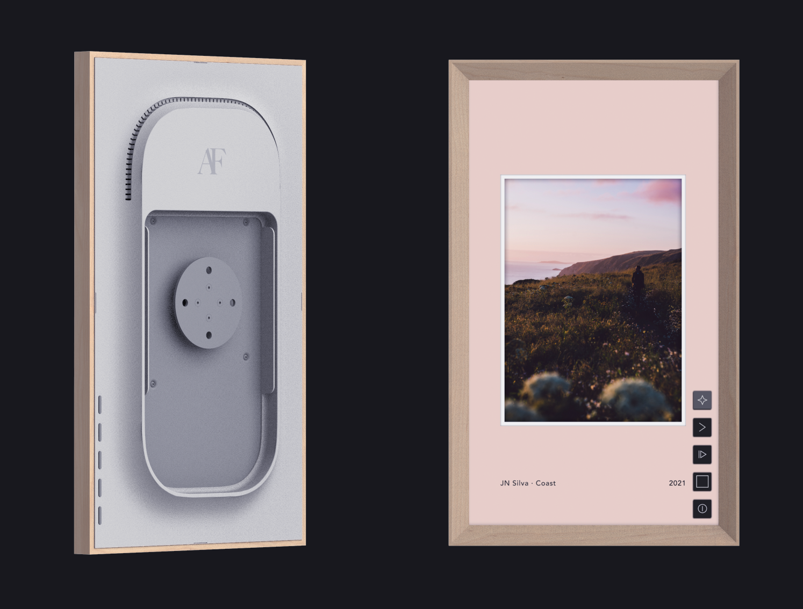

Atomic Form
Atomic Form is a digital art display I helped build while working at Brash Product Development. I was responsible for programming the main device application with a focus on the graphics. The UI is built using raw OpenGL which we chose to maximize performance. Artwork is decoded using libav libraries allowing the device to support a wide range of formats. The deivce has a set of buttons on the back and an accelorometer to allow configuration of the gallery mode, theme color, display orientation, etc.
